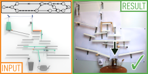
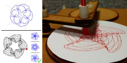
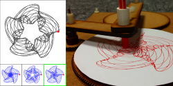

Hi, my name is Robin Roussel.
I am a 4th year PhD student at University College London, supervised by Niloy J. Mitra, Marie-Paule Cani and Jean-Claude Léon. I spent a year at Inria in the IMAGINE team as a visiting PhD student, and 3 months at Adobe as a research intern under the supervision of Amanda Ghassaei and Matt Fisher. My research interests focus on computational design and fabrication methods applied to problems at the intersection of art and engineering.
Previously I completed an Ingénieur Civil degree (equivalent to a Master of Science and Executive Engineering) at MINES ParisTech.
Publications
-

Designing Chain Reaction Contraptions from Causal Graphs
Robin Roussel, Marie-Paule Cani, Jean-Claude Léon, Niloy J. Mitra ACM Transaction on Graphics (SIGGRAPH 2019) [webpage] -

Exploratory Design of Mechanical Devices with Motion Constraints
Robin Roussel, Marie-Paule Cani, Jean-Claude Léon, Niloy J. Mitra Computer & Graphics 2018 [webpage] -

SPIROU: Constrained Exploration for Mechanical Motion Design
Robin Roussel, Marie-Paule Cani, Jean-Claude Léon, Niloy J. Mitra Symposium on Computational Fabrication 2017 [webpage]